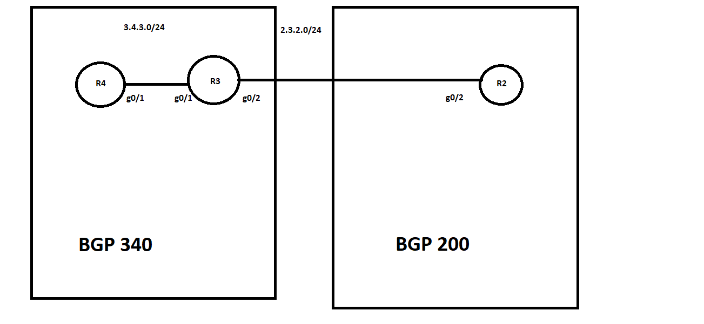

Introduction to BGP:
Before going in some actual configuration, i'll give you a brief introduction about BGP and how it works.BGP is a EGP (Exterior Gateway Protocol) that ISPs use to connect the internet together. BGP is different from IGP (RIP,OSPF,EIGRP). The only thing that IGPs concern is finding the shortest path to the destination while BGP only cares about "How to manipulate the traffic path". The next thing makes BGP different from IGPs is that its scalability. If your enterprise network consists of 10000 routes, you wouldn't want to run IGP inside your network otherwise it'll break your connectivity. So BGP is a great choice for your company if you have that much of route.
Some characteristics of BGP that you will need to remember:
- BGP is an EGP.
- BGP advetises, learns, choose the best path inside the global internet.
- You can also use BGP in your Network just like IGPs.
- BGP uses TCP port 179
- BGP needs to complete TCP 3 way handshakes before moving into other states
BGP neighborship types:
There are two type of bgp neighborship: eBGP and iBGP. When a BGP neighborship is form between two routers, that are in the same AS, they are iBGP neighbor. The different between iBGP and eBGP is how the routers update the AS PATH when advetising BGP routes to their neighbors.
Let's use this example to clarify the neighborship types:
Here's the configuration of R3 and R4:
R3(config)#do sh run | sec router bgp
router bgp 340
bgp log-neighbor-changes
neighbor 3.4.3.4 remote-as 340
R4(config)#do sh run | sec router bgp
router bgp 340
bgp log-neighbor-changes
network 44.44.44.0 mask 255.255.255.0
neighbor 3.4.3.3 remote-as 340
R3's Routing table and BGP table:
R3#sh ip route | inc B
B 44.44.44.0 [200/0] via 3.4.3.4, 00:06:54
The i sign in the Path means that the original router maybe use network cmd to introduce this route to BGP.
In this example, we can see when two routers form an iBGP relationship, the router adsvertises the route didn't add the Path number.
What about eBGP neighbor?
Let's consider R3 and R2.
R2 and R3 configuration for eBGP:
R2's BGP table:
When R3 adsvertises the 44.44.44.0/24 route to R2, R3 adds its AS to the Path.
If you encouter a BGP route in the BGP table like this:
a.b.c.d/24 | The path is: 500 700 550 i
The way you read this route is from left to right: There's a router in my AS (It could be me) is connected to AS 500.
AS 500 is connected to 700, 700 is connected to 550. and 550 is the AS that the route is originate (because 550 is the end of the list).
That's all for today, i hope you guys can have a good overview about BGP, in the next tutorial, i'll show you more about AS path, BGP neighborship condition,...)
See you there.